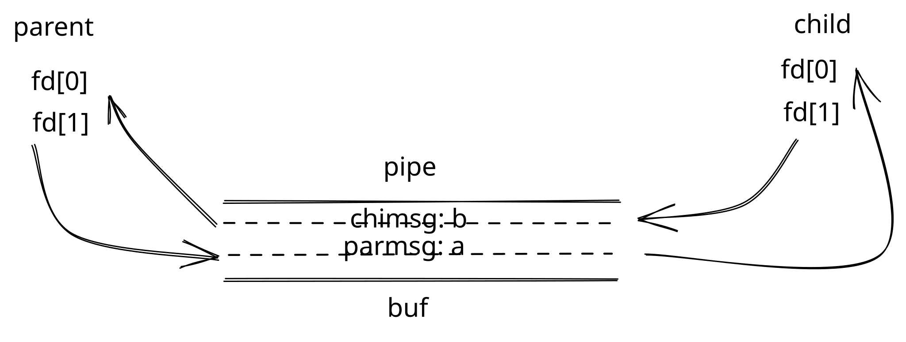

本文会不定期更新
最近（就这两天）在学习 MIT 的 6.S081，打算补一补操作系统的课，毕竟我对操作系统还是很感兴趣的（至于以前的坑嘛，笑）。
大致翻了下 6.S081 的组成：
- 课程视频：https://www.youtube.com/watch?v=L6YqHxYHa7A
- 课程教材：https://pdos.csail.mit.edu/6.828/2021/xv6/book-riscv-rev2.pdf
- 课程作业：https://pdos.csail.mit.edu/6.828/2021/schedule.html
如果要把课程视频一一看过去太累，好在已经有好心人提供了课程视频的中文字幕翻译，配合官方教材，可以在不看视频的情况下大致走一遍，对我而言够用了。
走完字幕后需要做一些 lab 练习才能巩固好所学，却没想到标注 easy 的 lab，其实也不是那么 easy。
Lab: Xv6 and Unix utilities
Boot xv6 (easy)
这个小 lab 是获取 xv6 的实验环境，做 xv6 实验所用的环境并不是 GitHub 上的那个仓库，而是需要你手动 clone 这个：git clone git://g.csail.mit.edu/xv6-labs-2020，之后你可以切到当前 lab 的分支：git checkout util，做什么实验就切到什么分支，非常方便。
之后是最常用的命令：make qemu，顺利的话你就得到这么一堆玩意：
riscv64-unknown-elf-gcc -Wall -Werror -O -fno-omit-frame-pointer -ggdb -gdwarf-2 -DSOL_UTIL -MD -mcmodel=medany -ffreestanding -fno-common -nostdlib -mno-relax -I. -fno-stack-protector -fno-pie -no-pie -c -o user/pingpong.o user/pingpong.c
riscv64-unknown-elf-ld -z max-page-size=4096 -N -e main -Ttext 0 -o user/_pingpong user/pingpong.o user/ulib.o user/usys.o user/printf.o user/umalloc.o
riscv64-unknown-elf-objdump -S user/_pingpong > user/pingpong.asm
riscv64-unknown-elf-objdump -t user/_pingpong | sed '1,/SYMBOL TABLE/d; s/ .* / /; /^$/d' > user/pingpong.sym
mkfs/mkfs fs.img README user/xargstest.sh user/_cat user/_echo user/_forktest user/_grep user/_init user/_kill user/_ln user/_ls user/_mkdir user/_rm user/_sh user/_sleep user/_pingpong user/_primes user/_stressfs user/_usertests user/_grind user/_wc user/_zombie
nmeta 46 (boot, super, log blocks 30 inode blocks 13, bitmap blocks 1) blocks 954 total 1000
balloc: first 727 blocks have been allocated
balloc: write bitmap block at sector 45
qemu-system-riscv64 -machine virt -bios none -kernel kernel/kernel -m 128M -smp 3 -nographic -drive file=fs.img,if=none,format=raw,id=x0 -device virtio-blk-device,drive=x0,bus=virtio-mmio-bus.0
xv6 kernel is booting
hart 1 starting
hart 2 starting
init: starting sh
$才怪！在我的 MacBook 上卡住了，具体修改请看：
diff --git a/kernel/kernelvec.S b/kernel/kernelvec.S
index 3370ae5..3e9d3e9 100644
--- a/kernel/kernelvec.S
+++ b/kernel/kernelvec.S
@@ -85,11 +85,6 @@ kernelvec:
// return to whatever we were doing in the kernel.
sret
-// help: if you hit these, an unexpected exception/interrupt happened in M-mode.
-// use `info registers` in the qemu monitor to get the relevant CSRs.
-unexpected_exc: j unexpected_exc
-unexpected_int: j unexpected_int
-
#
# machine-mode timer interrupt.
#
@@ -106,15 +101,6 @@ timervec:
sd a2, 8(a0)
sd a3, 16(a0)
- csrr a1, mcause
- // we should not get exceptions in M-mode. if we do, something went
- // very wrong and we should explicitly jump to an infinite loop for the
- // purpose.
- bgez a1, unexpected_exc
- li a2, (1<<63 | 7)
- // likewise for any interrupts that are not machine timer interrupts.
- bne a1, a2, unexpected_int
-
# schedule the next timer interrupt
# by adding interval to mtimecmp.
ld a1, 32(a0) # CLINT_MTIMECMP(hart)
@@ -124,7 +110,7 @@ timervec:
sd a3, 0(a1)
# raise a supervisor software interrupt.
- li a1, 2
+ li a1, 2
csrw sip, a1
ld a3, 16(a0)
diff --git a/kernel/riscv.h b/kernel/riscv.h
index 5f6c3d9..0aec003 100644
--- a/kernel/riscv.h
+++ b/kernel/riscv.h
@@ -38,29 +38,6 @@ w_mepc(uint64 x)
asm volatile("csrw mepc, %0" : : "r" (x));
}
-// physical memory protection CSRs
-#define PMP_R (1L << 0)
-#define PMP_W (1L << 1)
-#define PMP_X (1L << 2)
-// naturally aligned power of two
-#define PMP_MATCH_NAPOT (3L << 3)
-
-// we only implement accessing one PMP register
-
-// write to the first 8 PMP configuration registers
-static inline void
-w_pmpcfg0(uint64 x)
-{
- asm volatile("csrw pmpcfg0, %0" : : "r" (x));
-}
-
-// write to the address for PMP region 0
-static inline void
-w_pmpaddr0(uint64 x)
-{
- asm volatile("csrw pmpaddr0, %0" : : "r" (x));
-}
-
// Supervisor Status Register, sstatus
#define SSTATUS_SPP (1L << 8) // Previous mode, 1=Supervisor, 0=User
diff --git a/kernel/start.c b/kernel/start.c
index 1c9fffc..4eb6c2d 100644
--- a/kernel/start.c
+++ b/kernel/start.c
@@ -7,8 +7,6 @@
void main();
void timerinit();
-static void pmpinit();
-
// entry.S needs one stack per CPU.
__attribute__ ((aligned (16))) char stack0[4096 * NCPU];
@@ -47,36 +45,10 @@ start()
int id = r_mhartid();
w_tp(id);
- // allow access to all physical memory by S mode
- pmpinit();
-
// switch to supervisor mode and jump to main().
asm volatile("mret");
}
-// configures the pmp registers trivially so we can boot. it is not permitted
-// to jump to S mode without having these configured as instruction fetch will
-// fail, however we do not actually use them for protection in xv6, so we just
-// need to put something trivial there.
-//
-// see section 3.6.1 "Physical Memory Protection CSRs" in the RISC-V privileged
-// specification (v20190608)
-//
-// "If no PMP entry matches an M-mode access, the access succeeds. If no PMP
-// entry matches an S-mode or U-mode access, but at least one PMP entry is
-// implemented, the access fails." (3.6.1)
-static void
-pmpinit()
-{
- // see figure 3.27 "PMP address register format, RV64" and table 3.10 "NAPOT
- // range encoding in PMP address and configuration registers" in the RISC-V
- // privileged specification
- // we set the bits such that this matches any 56-bit physical address
- w_pmpaddr0((~0ULL) >> 10);
- // then we allow the access
- w_pmpcfg0(PMP_R | PMP_W | PMP_X | PMP_MATCH_NAPOT);
-}
-
// set up to receive timer interrupts in machine mode,
// which arrive at timervec in kernelvec.S,
// which turns them into software interrupts for一顿修改后编译终于不再卡住了（觉得乱没关系，看后文就好），但是我调试的时候有个奇怪的问题——用 gdb 打印的时候会报：dwarf2_find_location_expression: Corrupted DWARF expression. 的错。
最开始我以为这是 macOS 的问题，想换到 Ubuntu，但我的 Ubuntu 版本是 18.04，而 Xv6 在 Ubuntu 上的安装需要：sudo apt-get install git build-essential gdb-multiarch qemu-system-misc gcc-riscv64-linux-gnu binutils-riscv64-linux-gnu，其中 qemu-system-misc 需要 Ubuntu 的版本为 20 以上，所以我继续回来在 macOS 上想办法，最后在这个 PR 中找到了答案：
修改 makefile：
- CFLAGS = -Wall -Werror -Wno-error=infinite-recursion -O -fno-omit-frame-pointer -ggdb
+ CFLAGS = -Wall -Werror -Wno-error=infinite-recursion -O -fno-omit-frame-pointer -ggdb -gdwarf-2然后重新编译：
make clean && make CPUS=1 qemu-gdb
问题解决！
悲报：其实你不用像我这么改，因为我所遇到的问题似乎都被人解决了，只要你把 clone 的
2020换成2021即可，悲伤，两天白玩。
现在终于可以敲代码做 lab 了。
sleep (easy)
Implement the UNIX program sleep for xv6; your sleep should pause for a user-specified number of ticks. A tick is a notion of time defined by the xv6 kernel, namely the time between two interrupts from the timer chip. Your solution should be in the file user/sleep.c.
为 xv6 实现 UNIX 程序 sleep；您的 sleep 应暂停用户指定的 tick 数。tick 是由 xv6 内核定义的时间概念，即来自计时器芯片的两个中断之间的时间。您的解决方案应位于文件 user/sleep.c 中。
Some hints:
Before you start coding, read Chapter 1 of the xv6 book.
Look at some of the other programs in user/ (e.g., user/echo.c, user/grep.c, and user/rm.c)
to see how you can obtain the command-line arguments passed to a program.
If the user forgets to pass an argument, sleep should print an error message.
The command-line argument is passed as a string; you can convert it to an integer using atoi (see user/ulib.c).
Use the system call sleep.
See kernel/sysproc.c for the xv6 kernel code that implements the sleep system call (look for sys_sleep),
user/user.h for the C definition of sleep callable from a user program,
and user/usys.S for the assembler code that jumps from user code into the kernel for sleep.
Make sure main calls exit() in order to exit your program.
Add your sleep program to UPROGS in Makefile; once you've done that,
make qemu will compile your program and you'll be able to run it from the xv6 shell.
Look at Kernighan and Ritchie's book The C programming language (second edition) (K&R) to learn about C.这玩意还是相对简单：
#include "kernel/types.h"
#include "kernel/stat.h"
#include "user/user.h"
int main(int argc, char *argv[])
{
if (argc < 2)
{
fprintf(2, "Usage: sleep x/10th of a second...\n");
exit(1);
}
sleep(atoi(argv[1]));
exit(0);
}测试一下：
./grade-lab-util sleep
make: `kernel/kernel' is up to date.
== Test sleep, no arguments == sleep, no arguments: OK (1.3s)
== Test sleep, returns == sleep, returns: OK (1.1s)
== Test sleep, makes syscall == sleep, makes syscall: OK (0.8s) 搞定。
pingpong (easy)
Write a program that uses UNIX system calls to ‘ping-pong’ a byte between two processes over a pair of pipes, one for each direction. The parent should send a byte to the child; the child should print “<pid>: received ping”, where <pid> is its process ID, write the byte on the pipe to the parent, and exit; the parent should read the byte from the child, print “<pid>: received pong”, and exit. Your solution should be in the file user/pingpong.c.
编写一个程序，该程序使用 UNIX 系统调用，通过一对管道在两个进程之间“乒乓”一个字节，每个方向一个。父进程应该向子进程发送一个字节；子进程应打印“<pid>: received ping”，<pid>表示其进程ID，后将管道上的字节写入父进程，然后退出；父进程应从子进程的 pipe 中读取字节，打印“<pid>: received ping”，然后退出。您的解决方案应位于文件 user/pingpong.c 中。
Some hints:
Use pipe to create a pipe.
Use fork to create a child.
Use read to read from the pipe, and write to write to the pipe.
Use getpid to find the process ID of the calling process.
Add the program to UPROGS in Makefile.
User programs on xv6 have a limited set of library functions available to them.
You can see the list in user/user.h;
the source (other than for system calls) is in user/ulib.c, user/printf.c, and user/umalloc.c.这个就是并不 easy 的 easy lab 了，最开始的时候怎么都有问题，不是交错打印就是提前退出，上网查找，主流的解决方案是用两个 pipe：
#include "kernel/types.h"
#include "user/user.h"
#define READEND 0
#define WRITEEND 1
int
main(int argc, char *argv[]) {
int p1[2];
int p2[2];
int pid;
char buf[1];
pipe(p1);
pipe(p2);
pid = fork();
if (pid < 0)
exit(1);
else if (pid == 0) {
close(p1[WRITEEND]);
close(p2[READEND]);
read(p1[READEND], buf, 1);
printf("%d: received ping\n", getpid());
write(p2[WRITEEND], " ", 1);
close(p1[READEND]);
close(p2[WRITEEND]);
exit(0);
} else {
close(p1[READEND]);
close(p2[WRITEEND]);
write(p1[WRITEEND], " ", 1);
read(p2[READEND], buf, 1);
printf("%d: received pong\n", getpid());
close(p1[WRITEEND]);
close(p2[READEND]);
exit(0);
}
}这个 lab 如果需要提示，就是用两个 pipe，一个接一个发（没有化很遗憾，对不起马老师）；
但我最开始写的时候想用一个 pipe 就解决问题，所以更接近这个答案：
#include "kernel/types.h"
#include "kernel/stat.h"
#include "user/user.h"
int main(int argc, char *argv[]) {
int p[2];
char buf[2];
char *parmsg = "a";
char *chimsg = "b";
pipe(p);
if (fork() == 0){
if (read(p[0], buf, 1) != 1){
fprintf(2, "Can't read from parent!\n");
exit(1);
}
printf("child receive: %c\n", buf[0]);
close(p[0]);
printf("%d: received ping\n", getpid());
if (write(p[1], chimsg, 1) != 1){
fprintf(2, "Can't write to parent!");
}
close(p[1]);
exit(0);
} else {
if (write(p[1], parmsg, 1) != 1){
fprintf(2, "Can't write to child!\n");
exit(1);
}
close(p[1]);
wait(0);
if (read(p[0], buf, 1) != 1){
fprintf(2, "Can't read from child!");
exit(1);
}
printf("parent receive: %c\n", buf[0]);
close(p[0]);
printf("%d: received pong\n", getpid());
exit(0);
}
}如果我一上来就写成这样也不会说这道题难了，我写的是这样的：
#include "kernel/types.h"
#include "kernel/stat.h"
#include "user/user.h"
int main(int argc, char *argv[]) {
int p[2];
char buf[2];
char *parmsg = "a";
char *chimsg = "b";
pipe(p);
if (fork() == 0){
if (read(p[0], buf, 1) != 1){
fprintf(2, "Can't read from parent!\n");
exit(1);
}
printf("child receive: %c\n", buf[0]);
close(p[0]);
printf("%d: received ping\n", getpid());
if (write(p[1], chimsg, 1) != 1){
fprintf(2, "Can't write to parent!");
}
close(p[1]);
exit(0);
} else {
if (write(p[1], parmsg, 1) != 1){
fprintf(2, "Can't write to child!\n");
exit(1);
}
close(p[1]);
if (read(p[0], buf, 1) != 1){
fprintf(2, "Can't read from child!");
exit(1);
}
printf("parent receive: %c\n", buf[0]);
close(p[0]);
printf("%d: received pong\n", getpid());
wait(0)
exit(0);
}
}区别在于 wait(0) 的位置。我的版本，输出一般是这样的：
$ pingpong
parent receive: a
3: received pong代码会直接阻塞住，为了找出 Bug，我去掉了 wait(0)，输出开始有一些变化了：
#include "kernel/types.h"
#include "kernel/stat.h"
#include "user/user.h"
int main(int argc, char *argv[]){
int p[2];
char buf[2];
char *parmsg = "a";
char *chimsg = "b";
pipe(p);
if (fork() == 0){
if (read(p[0], buf, 1) != 1){
fprintf(2, "Can't read from parent!\n");
exit(1);
}
printf("child receive: %c\n", buf[0]);
close(p[0]);
printf("%d: received ping\n", getpid());
if (write(p[1], chimsg, 1) != 1){
fprintf(2, "Can't write to parent!");
}
close(p[1]);
exit(0);
} else {
if (write(p[1], parmsg, 1) != 1){
fprintf(2, "Can't write to child!\n");
exit(1);
}
close(p[1]);
if (read(p[0], buf, 1) != 1){
fprintf(2, "Can't read from child!");
exit(1);
}
printf("parent receive: %c\n", buf[0]);
close(p[0]);
printf("%d: received pong\n", getpid());
exit(0);
}
}输出是这样的：
$ pingpong
parent receive: a
3: received pong
$ pingpong
parent receive: a
5: received pong
$ pingpong
parent receive: a
7: received pong
$ pingpong
parent receive: a
9: received pong
$ pingpong
parent receive: a
11: received pong
$ pingpong
parent receive: a
13: received pong
$ pingpong
child receive: a
16: received ping
parent receive: b
15: received pong
$ QEMU: Terminated可以看到最后还是正常运行了一次，其余都是错误输出，为什么会这样呢？关键在 pipe 上。
在 xv6 中通过系统调用 pipe(int p[]) 可以创建一个匿名管道，然后将对应管道读端的文件描述符放入 p[0]，对应管道写端的文件描述符放入 p[1]。p[0] 是具有只读属性的文件描述符，p[1] 是具有只写属性的文件描述符。
匿名管道底下对应的文件没有文件名，因此只能被有亲缘的进程打开。实际情形如下图所示

子进程与父进程之间通过匿名管道通信为什么子进程不需要等待父进程的写入先完成？
答案是，在管道上的 read 是阻塞的。在没有数据可读时，在管道上的 read 会一直阻塞，直到要么有新的数据被写入，或者管道的所有写端都被关闭。在后者的情况下，read 会返回 0。也正因为这个特性，所有不需要写入数据的子进程，都应该主动关闭掉管道的写端。
在我的程序中出现了这样的输出：
parent receive: a
3: received pong一个可能是：else 分支也就是父进程的 write 被同在 else 分支的 read（也就是它自己的）消耗掉了，所以 parent receive 才是 a 而不是 b。
write 操作是在 read 操作之前完成的，因此在 read 操作之前，数据已经被写入管道中，且管道中的数据已经准备好被读取。因此，可以保证在 read 操作中能够读取到 write 操作写入的数据。
正常的程序，父进程写入管道的数据应该被子进程消耗掉才对。如果不加 wait(0)：
- 运气好，就像最后一次输出，非常凑巧，顺序恰好和把
wait(0)放在父进程write之后那里的顺序一致：在父进程write之后等待子进程退出，这样能够保证父进程的write一定是由子进程的read消耗掉的，同时子进程write一个字节后直接执行结束，父进程就可以read到值了； - 运气不好，遇到先运行父进程一直到
wait调用而没来得及运行子进程的情况，就会出现这样的问题：子进程的read会一直阻塞，因为父进程的write被它自己的read给消耗掉了，此时没有谁来再给管道写入值了，再加上子进程还要给父进程write一个字节，所以它还不能在开头直接close(p[1]);，read返回的第二个条件也不满足，所以子进程的read会一直阻塞。
问题解决。看似很小的问题，其实也有一点原子的味道，如果给 pipe 上锁，是不是就不会出现这个问题了？值得思考。